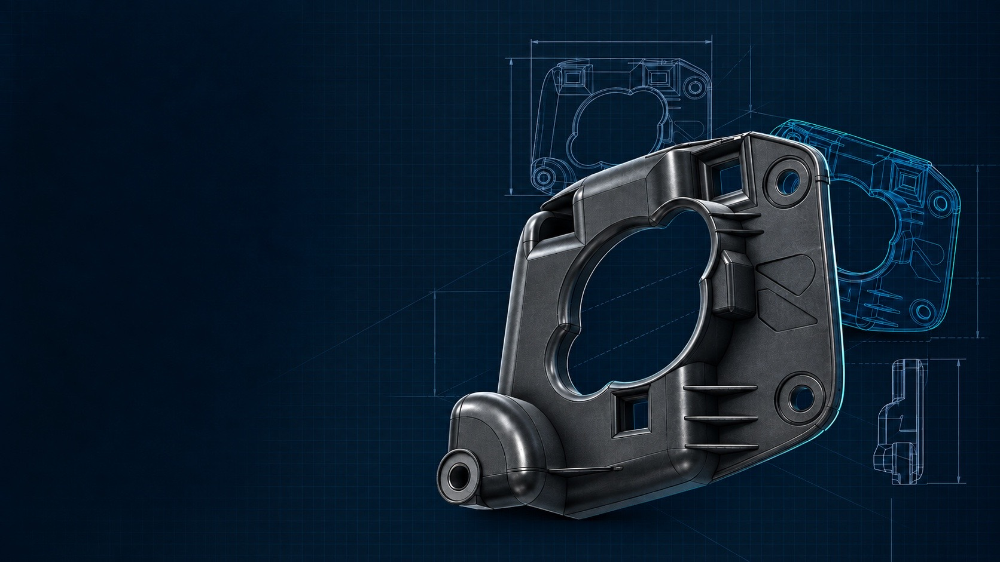
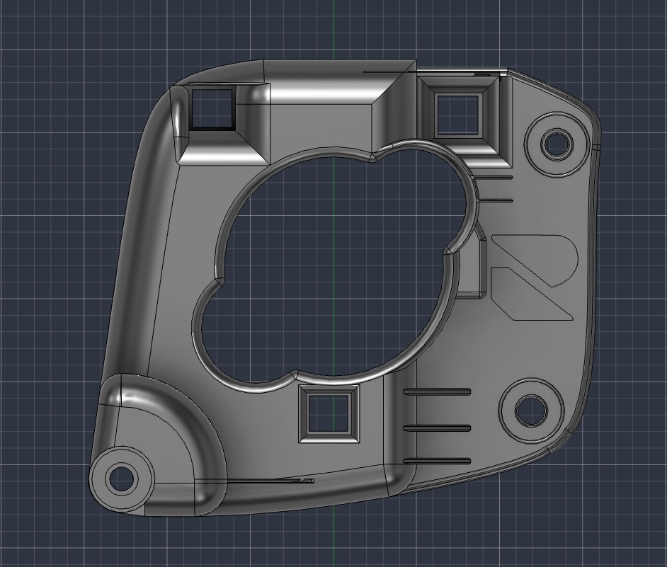
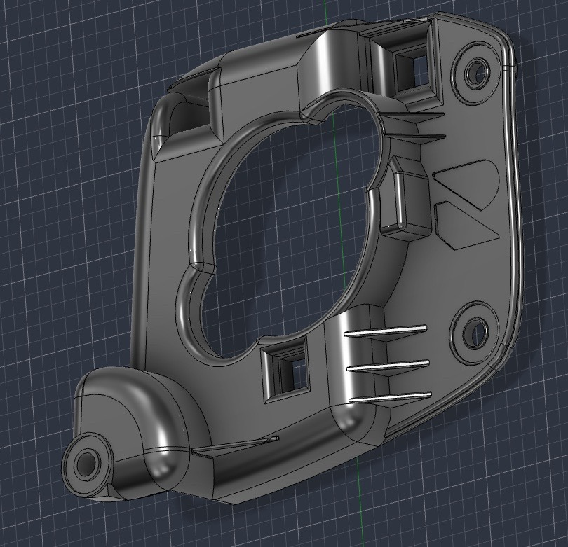
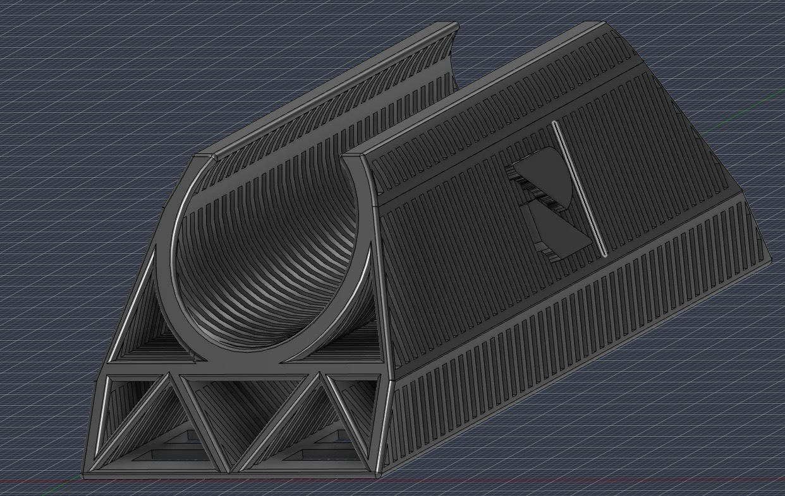

01
Replacement parts
Explore a route for discontinued, unavailable or damaged components using the original and surrounding interfaces as reference.

3D Project Development / Fremont
Turn a discontinued, damaged or custom part into a considered digital model and practical next step.
What it is
3D project development starts with what exists: a broken part, mating geometry, photos, dimensions or a working idea. That reference becomes a revisable CAD model, a prototype when useful, and a production-ready direction.
It is especially useful when standard supply has ended, a product needs a custom fit, or a component needs to be understood before it can be made again.

Where it helps
Explore a route for discontinued, unavailable or damaged components using the original and surrounding interfaces as reference.
Develop adaptations, mounts and refinements that respond to the dimensions and use case in front of you.
Recover geometry and functional intent from an existing component, assembly, image set or measured reference.
Use a physical iteration when fit, clearance, mounting access or assembly needs to be evaluated.
Our Process
Capture the usable geometry and reference surfaces, or organize the information already available.
Rebuild the part as a controlled model with the interfaces, clearances and intent in view.
Test a practical iteration when the real-world fit needs more evidence than a screen can provide.
Prepare the selected material and output path for the part’s intended application.
Material direction
Material selection depends on the part’s environment, flexibility, heat exposure and loading. These cards describe common directions, not a guarantee of suitability without evaluation.
Useful for fit checks, presentation models and light-duty prototypes.
A balanced option for many functional parts where toughness and moisture resistance matter.
Often considered where higher temperature performance or outdoor exposure are relevant.
For flexible, impact-absorbing or grip-oriented components.
For parts that may benefit from toughness and wear resistance.
For selected engineering materials where stiffness and refined surface detail are priorities.
Project direction
A broken bracket or missing component is not automatically ready to copy. The useful work is understanding the mounting surfaces, load direction, material constraints and required fit before the replacement path is selected.
Discuss a missing part ↗
Project gallery
Portfolio placeholders using selected technical visuals. Replace with photographs or renders of completed Reverso Works projects as they are approved for display.


Start with what you have